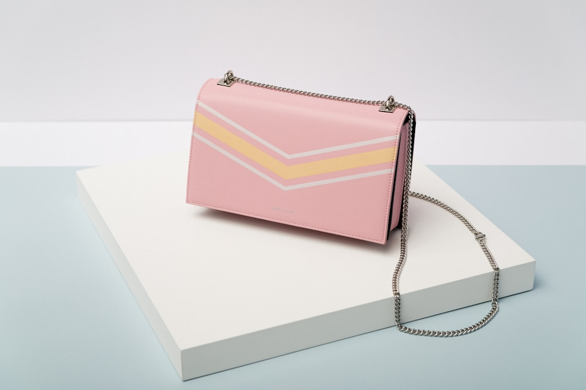

<!DOCTYPE html>
<html lang="en">
<head>
  <meta charset="UTF-8">
  <meta name="viewport" content="width=device-width, initial-scale=1.0">
  <title>Quiet Luxury and the Evolution of the Structured Tote Silhouette | Velvet Tote Beam Journal</title>
  <meta name="description" content="An analytical exploration of the quiet luxury movement, subtle aesthetics, architectural proportions, and the demise of logomania in luxury handbags.">
  <link rel="canonical" href="https://velvettotebeam.com/blog/quiet-luxury-and-the-evolution-of-the-structured-tote-silhouette.html">
  <link rel="preconnect" href="https://fonts.googleapis.com">
  <link rel="preconnect" href="https://fonts.gstatic.com" crossorigin>
  <link href="https://fonts.googleapis.com/css2?family=Playfair+Display:ital,wght@0,600;0,700;0,800;1,600&family=Plus+Jakarta+Sans:wght@400;500;600;700&display=swap" rel="stylesheet">
  <link rel="stylesheet" href="../css/style.css">
  <!-- Google tag (gtag.js) -->
<script async src="https://www.googletagmanager.com/gtag/js?id=G-0LY0HY7L01"></script>
<script>
  window.dataLayer = window.dataLayer || [];
  function gtag(){dataLayer.push(arguments);}
  gtag('js', new Date());
  gtag('config', 'G-0LY0HY7L01');
</script>
</head>
<body>
  <header class="site-header">
    <div class="container header-inner">
      <a href="../index.html" class="brand-logo">
        Velvet <span>Tote</span> Beam
      </a>
      <nav class="main-nav">
        <a href="../index.html" class="nav-link">Home</a>
        <a href="../index.html#atelier" class="nav-link">Atelier</a>
        <a href="../index.html#silhouettes" class="nav-link">Silhouettes</a>
        <a href="../index.html#craftsmanship" class="nav-link">Craftsmanship</a>
        <a href="../index.html#provenance" class="nav-link">Provenance</a>
        <a href="../blog.html" class="nav-link active">Journal</a>
        <a href="../about.html" class="nav-link">Maison</a>
        <a href="../contact.html" class="nav-link">Concierge</a>
      </nav>
      <div class="nav-actions">
        <a href="../contact.html" class="btn btn-accent btn-header">Bespoke Inquiry</a>
        <button class="mobile-toggle" aria-label="Toggle navigation">&#9776;</button>
      </div>
    </div>
  </header>

  <section class="section-padding bg-emerald-soft">
    <div class="container" style="max-width:860px;">
      <span class="section-subtitle">Fashion Theory Monograph 05</span>
      <h1>Quiet Luxury and the Evolution of the Structured Tote Silhouette</h1>
      <div class="blog-meta-bar">
        <span>By Haute Maroquinerie Guild</span>
        <span>Published: 2026</span>
        <span>Reading Time: 15 Minutes</span>
        <span>Category: Fashion Sociology & Aesthetics</span>
      </div>
    </div>
  </section>

  <section class="section-padding bg-white">
    <div class="container">
      <article class="blog-content-wrap">
        
        
        
        <h2>1. The Sociology of Luxury: The Fall of Logomania</h2>
        <p>Across the sociological evolution of luxury fashion, the semiotics of social signaling have perpetually cycled between ostentatious display and refined understatement. During the late 1990s and early 2000s, commercial luxury conglomerates transformed handbags into mobile advertising billboards, plastering synthetic canvas surfaces with repetitive monogram logos and oversized gilded emblems designed for instant distance recognition.</p>
        <p>In the contemporary cultural landscape, however, a profound paradigm shift has taken place. The global luxury consumer—increasingly educated, aesthetically discerning, and fatigued by ubiquitous commercial marketing—has decisively rejected loud logomania in favor of <strong>"Quiet Luxury"</strong> (or stealth wealth). In this elevated aesthetic domain, prestige is communicated not through branded graphics, but through the whispering authority of noble materiality, flawless architectural silhouette, and sublime tactile craftsmanship.</p>

        <h2>2. Architectural Proportion: The Golden Ratio in Bag Design</h2>
        <p>Why do certain tote bag silhouettes exude an innate sense of timeless majesty while others appear awkward and dated within two seasons? The secret lies in classical sacred geometry and the Golden Ratio ($\phi pprox 1.618$).</p>
        
        <div class="haute-callout">
            <p><strong>The Harmonious Mathematical Dimensions of the Structured Tote:</strong></p>
            <p>&bull; <strong>Width-to-Height Ratio:</strong> A classical day tote engineered at a 1:1.25 or 1:1.618 ratio creates an optical illusion of vertical elegance while providing generous horizontal volume for documents and digital devices.</p>
            <p>&bull; <strong>Handle Drop Proportion:</strong> A handle drop calibrated precisely to 42% of total bag height allows comfortable shoulder carrying without causing the base to bump awkwardly against the hip during walking strides.</p>
            <p>&bull; <strong>Gusset Depth Calculus:</strong> Side gussets structured at 38% of frontal width maintain a slender profile under the arm while expanding to accommodate travel necessities.</p>
        </div>

        <table class="data-table">
          <thead>
            <tr>
              <th>Aesthetic Paradigm</th>
              <th>Primary Signaling Mechanism</th>
              <th>Target Audience &amp; Cultural Longevity</th>
              <th>Material Focus</th>
            </tr>
          </thead>
          <tbody>
            <tr>
              <td><strong>Quiet Luxury (Haute Maroquinerie)</strong></td>
              <td>Tactile materiality, hand saddle stitching, architectural form</td>
              <td>Connoisseurs, collectors, generational longevity</td>
              <td>French box calfskin, Venetian silk velvet, solid brass</td>
            </tr>
            <tr>
              <td><strong>Commercial Logomania</strong></td>
              <td>Oversized monogram prints, loud metal branding badges</td>
              <td>Mass aspirational market, short trend cycles</td>
              <td>Polyurethane-coated canvas, Zamak alloy, synthetic leather</td>
            </tr>
            <tr>
              <td><strong>Fast Fashion Minimalism</strong></td>
              <td>Generic geometric shapes with stripped-back details</td>
              <td>Ephemeral seasonal consumers; rapid turnover</td>
              <td>Bonded split leather or PVC with plastic edge paint</td>
            </tr>
          </tbody>
        </table>

        <h2>3. The Tactile Language of Noble Materials</h2>
        <p>Quiet luxury is fundamentally a haptic, tactile experience. When an individual interacts with a Velvet Tote Beam tote, their sensory perception registers cues that no visual logo can match:</p>
        <p>The thumb brushes across the cool, liquid-soft nap of Venetian silk velvet; the fingers grip the dense, smooth grain of French box calfskin; the hand feels the reassuring heft of solid brass hardware; and the ear hears the crisp, muffled "thud" of an interior magnetic closure nestled behind glove-soft lambskin. This tactile symphony creates an intimate bond between the owner and the object that requires no external validation.</p>

        <h2>4. The Tote Bag as the Modern Scepter of Agency</h2>
        <p>Throughout history, women's accessories were often designed as diminutive, decorative clutches or reticules that held little more than a lace handkerchief or dance card—symbolizing domestic leisure and ornamental passivity. The modern structured tote bag, pioneered in the mid-twentieth century, represents a radical symbol of female autonomy, intellectual leadership, and cosmopolitan mobility.</p>
        <p>A contemporary structured tote carries the tools of modern empire: legal briefs, architectural blueprints, laptops, passports, and personal treasures. It is both a portable office and a personal sanctuary, engineered to move effortlessly from morning transatlantic flights to high-stakes boardrooms and evening cultural galas.</p>

        <h2>5. The Sustainable Ethics of Generational Heirlooms</h2>
        <p>Quiet luxury is inherently aligned with authentic environmental sustainability. The greatest threat to the global biosphere is not the consumption of luxury goods, but the relentless cycle of disposable fast fashion, where low-quality petroleum-based bags are discarded into landfills after a few months.</p>
        <p>When a patron commissions a handcrafted tote constructed from biodegradable vegetable-tanned leathers, renewable silk fibers, and recyclable solid brass, they are making a conscious decision to purchase once and cherish for a lifetime. An heirloom tote that serves three generations over fifty years possesses an environmental footprint dramatically smaller than dozens of synthetic commercial bags purchased across the same span.</p>

        <h2>6. Stylistic Versatility: The Chameleon Quality of the Velvet Tote</h2>
        <p>One of the remarkable qualities of the structured velvet and leather tote is its unmatched stylistic versatility. Paired with a tailored camel cashmere coat and equestrian riding boots, it radiates understated aristocratic refinement. Paired with crisp tailored denim and an ivory silk blouse, it adds a touch of artistic nonchalance. Carried into a black-tie gala, the deep jewel tones of the silk velvet catch ambient chandelier light, harmonizing flawlessly with evening couture.</p>

        
        <h2>6. The Semiotics of Subtlety in Global High Finance and Diplomacy</h2>
        <p>In high-stakes corporate negotiations, private wealth advisory, and international diplomatic circles, loud overt luxury is increasingly regarded as a marker of insecurity. Carrying an unbranded, impeccably constructed structured tote communicates quiet competence, self-possession, and cultural sophistication.</p>
        <p>It signals to peers that the bearer possesses the discerning eye to recognize supreme quality independently, without needing commercial corporate logos to validate their taste. This subtle aesthetic discretion fosters an immediate, unspoken kinship among connoisseurs who recognize the distinctive hand saddle stitch and noble materials from across the room.</p>

        <h2>7. The Architectural Geometry of the Modern Day Tote</h2>
        <p>The structured tote is essentially a portable building. Just as modernist architects like Mies van der Rohe and Le Corbusier celebrated structural honesty and clean geometric planes, our tote designs strip away superfluous ornamentation to celebrate pure form, proportion, and texture. The clean vertical lines of the leather chapes draw the eye upward, accentuating the sleek, stately posture of the bag against any silhouette.</p>
    
        <h2>7. Frequently Asked Questions on Quiet Luxury</h2>
        <div class="faq-wrap" style="margin-top:24px;">
          <div class="faq-item open">
            <button class="faq-question">
              <span>Why doesn't Velvet Tote Beam put large logo plaques on the outside of bags?</span>
              <span class="faq-icon">+</span>
            </button>
            <div class="faq-answer">
              We believe that true luxury speaks for itself. Our maker's mark is discreetly hand-debossed on the interior signature plaque, reserving the exterior exclusively for the pure beauty of noble velvet and leathercraft.
            </div>
          </div>
          <div class="faq-item">
            <button class="faq-question">
              <span>Will quiet luxury styles become outdated when fashion trends change?</span>
              <span class="faq-icon">+</span>
            </button>
            <div class="faq-answer">
              No. Architectural proportions, noble natural materials, and neutral jewel tones are immune to trend cycles. Structured totes designed in the 1950s remain as breathtakingly modern today as they were seventy years ago.
            </div>
          </div>
          <div class="faq-item">
            <button class="faq-question">
              <span>How does quiet luxury impact resale value?</span>
              <span class="faq-icon">+</span>
            </button>
            <div class="faq-answer">
              Handcrafted, logo-free luxury bags from premier ateliers historically maintain and appreciate in value far more reliably than branded seasonal trend bags, which often lose up to 70% of retail value once trends fade.
            </div>
          </div>
        </div>

        <h2>8. Conclusion: The Sovereign Beauty of Understatement</h2>
        <p>True sophistication requires no loud proclamations. In an over-stimulated world clamoring for attention, the quiet confidence of a structured, unbranded velvet and leather tote represents the ultimate refinement—an enduring celebration of artistry, dignity, and timeless grace.</p>
        
      </article>
    </div>
  </section>

  <footer class="site-footer">
    <div class="container">
      <div class="footer-grid">
        <div class="footer-col">
          <a href="../index.html" class="brand-logo" style="color:#ffffff; margin-bottom:16px; display:inline-block;">
            Velvet <span>Tote</span> Beam
          </a>
          <p>Velvet Tote Beam is an independent haute maroquinerie maison committed to bespoke silk velvet totes, handcrafted Italian calfskin leathergoods, and generational artisanal permanence.</p>
        </div>
        <div class="footer-col">
          <h4>Maison Navigation</h4>
          <ul class="footer-links">
            <li><a href="../index.html">Maison Home</a></li>
            <li><a href="../about.html">Atelier History</a></li>
            <li><a href="../blog.html">Maroquinerie Journal</a></li>
            <li><a href="../contact.html">Concierge Inquiries</a></li>
          </ul>
        </div>
        <div class="footer-col">
          <h4>Legal &amp; Policies</h4>
          <ul class="footer-links">
            <li><a href="../privacy-policy.html">Privacy Policy</a></li>
            <li><a href="../terms-and-conditions.html">Terms &amp; Conditions</a></li>
            <li><a href="../disclaimer.html">Authenticity Disclaimer</a></li>
            <li><a href="../cookie-policy.html">Cookie Preferences</a></li>
          </ul>
        </div>
        <div class="footer-col footer-contact-info">
          <h4>Global Flagship</h4>
          <p><strong>Salons:</strong> 181 Mercer Street, New York, NY 10012, United States</p>
          <p><strong>Concierge:</strong> +1-888-777-5845</p>
          <p><strong>Inquiries:</strong> concierge@velvettotebeam.com</p>
        </div>
      </div>
      <div class="footer-bottom">
        <p>&copy; 2026 Velvet Tote Beam. All rights reserved. Handcrafted with uncompromising luxury.</p>
      </div>
    </div>
  </footer>
  <script src="../js/main.js"></script>
</body>
</html>
